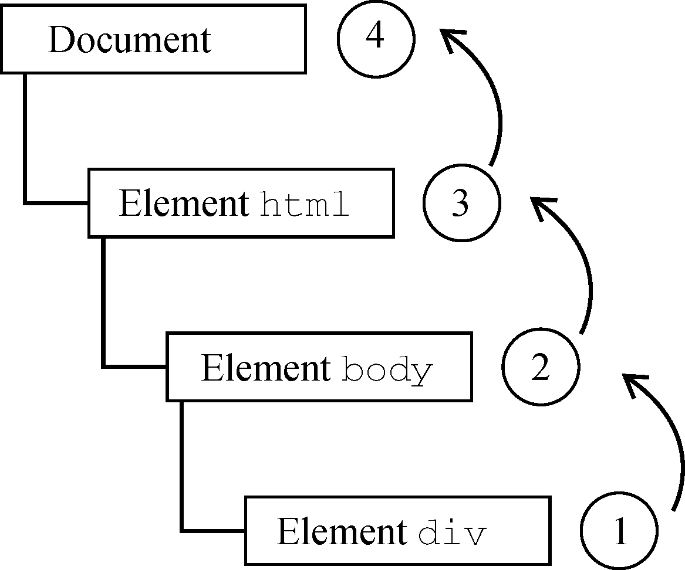
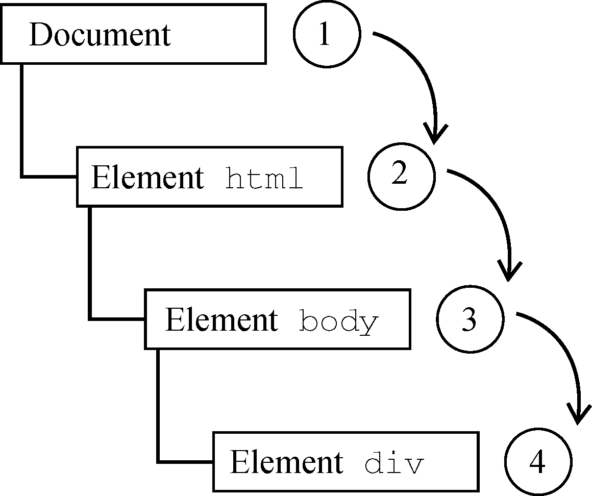
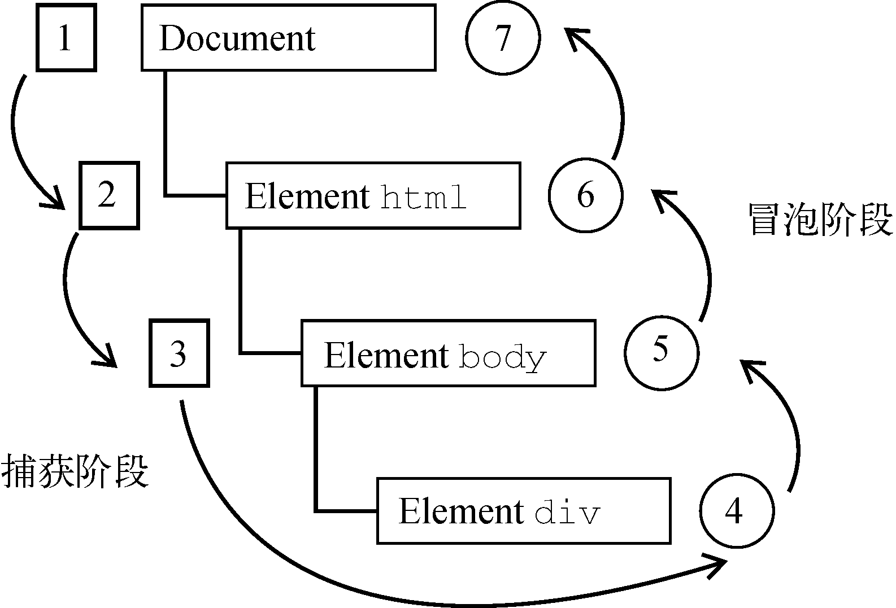

在第四代Web浏览器（IE4和Netscape Communicator 4）开始开发时，开发团队碰到了一个有意思的问题：页面哪个部分拥有特定的事件呢？要理解这个问题，可以在一张纸上画几个同心圆。把手指放到圆心上，则手指不仅是在一个圆圈里，而且是在所有的圆圈里。两家浏览器的开发团队都是以同样的方式看待浏览器事件的。当你点击一个按钮时，实际上不光点击了这个按钮，还点击了它的容器以及整个页面。
事件流描述了页面接收事件的顺序。结果非常有意思，IE和Netscape开发团队提出了几乎完全相反的事件流方案。IE将支持事件冒泡流，而Netscape Communicator将支持事件捕获流。
IE事件流被称为事件冒泡，这是因为事件被定义为从最具体的元素（文档树中最深的节点）开始触发，然后向上传播至没有那么具体的元素（文档）。比如有如下HTML页面：
<!doctype html>
<html>
<head>
<title>event bubbling example</title>
</head>
<body>
<div id="mydiv">click me</div>
</body>
</html>在点击页面中的<div>元素后，click事件会以如下顺序发生：
(1)
<div>
(2)
<body>
(3)
<html>
(4)
document
也就是说，<div>元素，即被点击的元素，最先触发click事件。然后，click事件沿DOM树一路向上，在经过的每个节点上依次触发，直至到达document对象。图17-1形象地展示了这个过程。

图 17-1
所有现代浏览器都支持事件冒泡，只是在实现方式上会有一些变化。IE5.5及早期版本会跳过<html>元素（从<body>直接到document）。现代浏览器中的事件会一直冒泡到window对象。
Netscape Communicator团队提出了另一种名为事件捕获的事件流。事件捕获的意思是最不具体的节点应该最先收到事件，而最具体的节点应该最后收到事件。事件捕获实际上是为了在事件到达最终目标前拦截事件。如果前面的例子使用事件捕获，则点击<div>元素会以下列顺序触发click事件：
(1)
document
(2)
<html>
(3)
<body>
(4)
<div>
在事件捕获中，click事件首先由document元素捕获，然后沿DOM树依次向下传播，直至到达实际的目标元素<div>。这个过程如图17-2所示。
虽然这是Netscape Communicator唯一的事件流模型，但事件捕获得到了所有现代浏览器的支持。实际上，所有浏览器都是从window对象开始捕获事件，而DOM2 Events规范规定的是从document开始。

图 17-2
由于旧版本浏览器不支持，因此实际当中几乎不会使用事件捕获。通常建议使用事件冒泡，特殊情况下可以使用事件捕获。
DOM2 Events规范规定事件流分为3个阶段：事件捕获、到达目标和事件冒泡。事件捕获最先发生，为提前拦截事件提供了可能。然后，实际的目标元素接收到事件。最后一个阶段是冒泡，最迟要在这个阶段响应事件。仍以前面那个简单的HTML为例，点击<div>元素会以如图17-3所示的顺序触发事件。

图 17-3
在DOM事件流中，实际的目标（<div>元素）在捕获阶段不会接收到事件。这是因为捕获阶段从document到<html>再到<body>就结束了。下一阶段，即会在<div>元素上触发事件的“到达目标”阶段，通常在事件处理时被认为是冒泡阶段的一部分（稍后讨论）。然后，冒泡阶段开始，事件反向传播至文档。
大多数支持DOM事件流的浏览器实现了一个小小的拓展。虽然DOM2 Events规范明确捕获阶段不命中事件目标，但现代浏览器都会在捕获阶段在事件目标上触发事件。最终结果是在事件目标上有两个机会来处理事件。
注意 所有现代浏览器都支持DOM事件流，只有IE8及更早版本不支持。